Keep Talking and Nobody Explodes Optimised v1
Cover
Keep Talking and Nobody Explodes Optimised v1
Introduction
Welcome to the dangerous and challenging world of bomb defusing.
Study this manual carefully; you are the expert. In these pages you will find everything you need to know to defuse even the most insidious of bombs.
And remember — One small oversight and it could all be over!
Keep Talking and Nobody Explodes Optimised v1
Defusing Bombs
Defusing Bombs
A bomb will explode when its countdown timer reaches 0:00 or when too many strikes have been recorded. The only way to defuse a bomb is to disarm all of its modules before its countdown timer expires.
Example Bomb
| 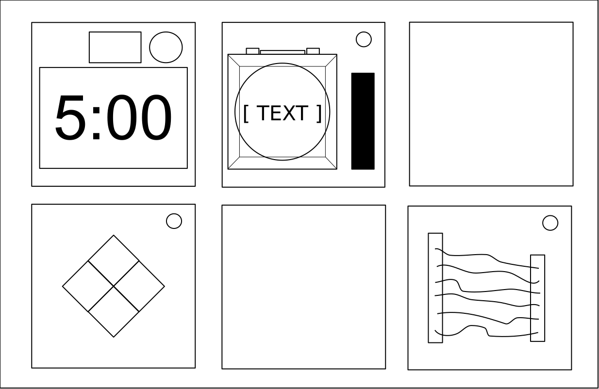 Front | 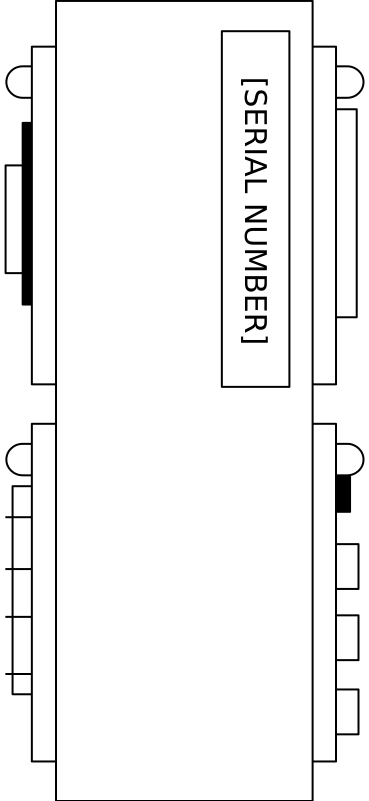 Side |
Modules
Each bomb will include up to 11 modules that must be disarmed. Each module is discrete and can be disarmed in any order.
Instructions for disarming modules can be found in Section 1. "Needy" modules present a special case and are described in Section 2.
Strikes
Strike Indicator
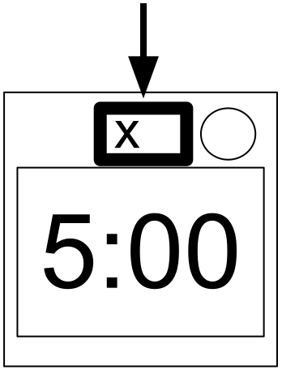
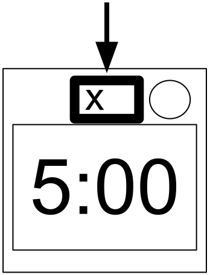
When the Defuser makes a mistake, the bomb will record a strike which will be displayed on the indicator above the countdown timer. Bombs with a strike indicator will explode upon the third strike. The timer will begin to count down faster after a strike has been recorded.
If no strike indicator is present above the countdown timer, the bomb will explode upon the first strike, leaving no room for error.
Gathering Information
Some disarming instructions will require specific information about the bomb, such as the serial number. This type of information can typically be found on the top, bottom, or sides of the bomb casing. See Appendix A, B, and C for identification instructions that will be useful in disarming certain modules.
Keep Talking and Nobody Explodes Optimised v1
Section 1 : Modules & Wires

Section 1 : Modules
Modules can be identified by an LED in the top right corner. When this LED is lit green, the module has been disarmed.
All modules must be disarmed to defuse the bomb.
On the Subject of Wires
Wires are the lifeblood of electronics! Wait, no, electricity is the lifeblood. Wires are more like the arteries. The veins? No matter…
- A wire module can have 3-6 wires on it.
- Only 1 correct wire needs to be cut to disarm the module.
- Wire ordering begins with the first on the top.
| 3 |
| ||||||||||
|---|---|---|---|---|---|---|---|---|---|---|---|
| 4 |
| ||||||||||
| 5 |
| ||||||||||
| 6 |
|
Keep Talking and Nobody Explodes Optimised v1
The Button
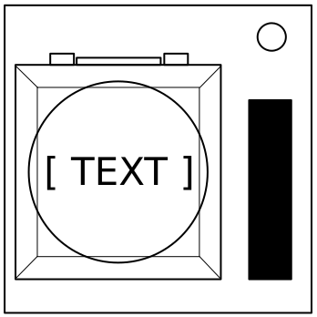
On the Subject of The Button
You might think that a button telling you to press it is pretty straightforward. That’s the kind of thinking that gets people exploded.
Follow these rules in the order they are listed. Perform the first action that applies:
- The button is red and says Hold: tap it
- The bomb has 2+ Batteries and the button says Detonate: tap it
- The button is blue and says Abort: hold it
- The bomb has a lit CAR and the button is white: hold it
- The bomb has 3+ Batteries and a lit FRK: tap it
- Otherwise: hold it
| Detonate | Hold | Abort | Press | ||
|---|---|---|---|---|---|
| Button Colour is: | White | ≥2Batt=Tap | Steps4,5,6 | Steps4,5,6 | Steps4,5,6 |
| Red | ≥2Batt=Tap | Tap | Steps 5,6 | Steps 5,6 | |
| Blue | ≥2Batt=Tap | Steps 5,6 | Hold | Steps 5,6 | |
| Yellow | ≥2Batt=Tap | Steps 5,6 | Steps 5,6 | Steps 5,6 | |
Releasing a Held Button
If you start holding the button down, a coloured strip will light up on the right side of the module. Based on its colour, you must release the button when the countdown timer has the following digit in any position:
- Blue = 4
- Yellow = 5
- Otherwise = 1
Keep Talking and Nobody Explodes Optimised v1
Keypads
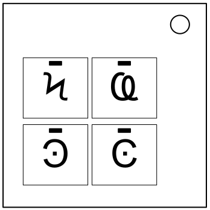
On the Subject of Keypads
I'm not sure what these symbols are, but I suspect they have something to do with occult.
- Only one column below has all four of the symbols from the keypad.
- Press the four buttons in the order their symbols appear from top to bottom within that column.
- Unique symbols are marked.
 |  |  |  | |||||||
 | |  |  |  | | |||||
 |  |  | |  | ||||||
 | |  |  |  |  | |||||
|  | | | | ||||||
|  |  | ||||||||
|  |  |
Keep Talking and Nobody Explodes Optimised v1
Simon Says

On the Subject of Simon Says
This is like one of those toys you played with as a kid where you have to match the pattern that appears, except this one is a knockoff that was probably purchased at a dollar store.
- One of the four coloured buttons will flash.
- Using the correct table below, press the button with the corresponding colour.
- The original button will flash, followed by another. Repeat this sequence in order using the colour mapping.
- The sequence will lengthen by one each time you correctly enter a sequence until the module is disarmed. (Length 3-5)
If the serial number contains a vowel:
| Red Flash | Blue Flash | Green Flash | Yellow Flash | ||
|---|---|---|---|---|---|
| Button to press: | No Strikes | Blue | Red | Yellow | Green |
| 1 Strike | Yellow | Green | Blue | Red | |
| 2 Strikes | Green | Red | Yellow | Blue | |
If the serial number does not contain a vowel:
| Red Flash | Blue Flash | Green Flash | Yellow Flash | ||
|---|---|---|---|---|---|
| Button to press: | No Strikes | Blue | Yellow | Green | Red |
| 1 Strike | Red | Blue | Yellow | Green | |
| 2 Strikes | Yellow | Green | Blue | Red | |
Keep Talking and Nobody Explodes Optimised v1
Who’s on First
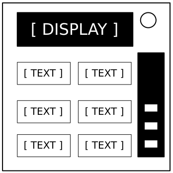
On the Subject of Who’s on First
This contraption is like something out of a sketch comedy routine, which might be funny if it wasn't connected to a bomb. I’ll keep this brief, as words only complicate matters.
- Read the display & use step 1 to see which label to read.
- Using this label, use step 2 to see which button to push.
- Repeat until the module has been disarmed.
- Marked words require little confirmation on how to spell them if understood correctly.
| Step 1 - Read | Step 2 - Push the first one present | ||||||||||||||||||||||||||||||||||||||||||||||||||||||||||||||||||||||||||||||||||||||||||||||||||||||||||||||||
|---|---|---|---|---|---|---|---|---|---|---|---|---|---|---|---|---|---|---|---|---|---|---|---|---|---|---|---|---|---|---|---|---|---|---|---|---|---|---|---|---|---|---|---|---|---|---|---|---|---|---|---|---|---|---|---|---|---|---|---|---|---|---|---|---|---|---|---|---|---|---|---|---|---|---|---|---|---|---|---|---|---|---|---|---|---|---|---|---|---|---|---|---|---|---|---|---|---|---|---|---|---|---|---|---|---|---|---|---|---|---|---|---|---|
|
|
Keep Talking and Nobody Explodes Optimised v1
Memory
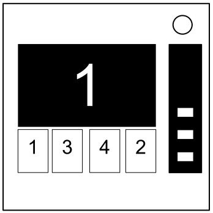
On the Subject of Memory
Memory is a fragile thing but so is everything else when a bomb goes off, so pay attention!
- Press the correct button to progress the module to the next stage. Complete all stages to disarm the module.
- Make sure you take note of the positions & labels of all pressed buttons.
- Pressing an incorrect button will cause a strike & reset the module back to stage 1.
- Button positions are ordered from left to right.
Stage 1
Stage 2
Stage 3
|
Stage 4
Stage 5
Grid
| |||||||||||||||||||||||||||||||||||||||||||||
Keep Talking and Nobody Explodes Optimised v1
Morse Code
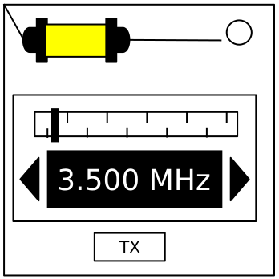
On the Subject of Morse Code
An antiquated form of naval communication? What next? At least it's genuine Morse Code, so pay attention and you might just learn something.
- Interpret the signal from the flashing light using the Morse Code chart to spell one of the words in the table.
- The signal will loop, with a long gap between repeats.
- Once the word is identified, set the corresponding frequency and press the transmit (TX) button.
- A short flash represents a dot. A long flash represents a dash. There is a long gap between letters. There is a very long gap before the word repeats.
- Gray morse letters don't need to be memorised.
- Orange morse letters don't need to be memorised if interpreted optimally.
- Marked letters in the frequency table indicate the only required letters from the start to identify the word.
| Letter | Morse |
|---|---|
| a | .- |
| b | -... |
| c | -.-. |
| d | -.. |
| e | . |
| f | ..-. |
| g | --. |
| h | .... |
| i | .. |
| j | .--- |
| k | -.- |
| l | .-.. |
| m | -- |
| n | -. |
| o | --- |
| p | .--. |
| q | --.- |
| r | .-. |
| Letter | Morse |
|---|---|
| s | ... |
| t | - |
| u | ..- |
| v | ...- |
| w | .-- |
| x | .--. |
| y | -.-- |
| z | --.. |
| 0 | ----- |
| 1 | .---- |
| 2 | ..--- |
| 3 | ...-- |
| 4 | ....- |
| 5 | ..... |
| 6 | -.... |
| 7 | --... |
| 8 | ---.. |
| 9 | ----. |
| If the word is: | Respond at frequency: | Right arrow presses: |
|---|---|---|
| shell | 3.505 MHz | 0 |
| halls | 3.515 MHz | 1 |
| slick | 3.522 MHz | 2 |
| trick | 3.532 MHz | 3 |
| boxes | 3.535 MHz | 4 |
| leaks | 3.542 MHz | 5 |
| strobe | 3.545 MHz | 6 |
| bistro | 3.552 MHz | 7 |
| flick | 3.555 MHz | 8 |
| bombs | 3.565 MHz | 9 |
| break | 3.572 MHz | 10 |
| brick | 3.575 MHz | 11 |
| steak | 3.582 MHz | 12 |
| sting | 3.592 MHz | 13 |
| vector | 3.595 MHz | 14 |
| beats | 3.600 MHz | 15 |
Keep Talking and Nobody Explodes Optimised v1
Complicated Wires
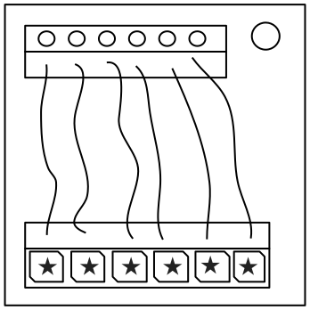
On the Subject of Complicated Wires
These wires aren't like the others. Some have stripes! That makes them completely different. The good news is that we've found a concise set of instructions on what to do about it! Maybe too concise...
Note that if a multicoloured wire is part-white, consider it to only have its other colour. (Example : White-Red = Red)
Follow these rules in the order they are listed. If a rule applies, cut the wire.
Alternatively, use the table below to decide whether or not to cut the wire.
- The wire is white and its LED is off.
- The wire is red, has a star and its LED is off.
- The last digit of the serial number is even, the wire has no star and it's LED is off.
- The last digit of the serial number is even, the wire is red-blue, has no star and it's LED is on.
- The bomb has 2+ Batteries, the wire is red and it's LED is on.
- The bomb has 2+ Batteries, the wire is white, has a star and it's LED is on.
- The bomb has a parallel port, the wire is blue and it's LED is on.
- The bomb has a parallel port, the wire is red-blue, has a star and it's LED is off.
- Otherwise, don't cut the wire.
| None | LED | Star | Both | ||
|---|---|---|---|---|---|
| Wire Colour is: | White | Cut | Don't | Cut | ≥ 2 Batt |
| Red | SN Even | ≥ 2 Batt | Cut | ≥ 2 Batt | |
| Blue | SN Even | Parallel | Don't | Parallel | |
| Both | SN Even | SN Even | Parallel | Don't | |
Keep Talking and Nobody Explodes Optimised v1
Wire Sequences
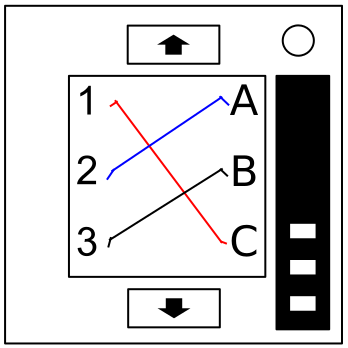
On the Subject of Wire Sequences
It's hard to say how this mechanism works. The engineering is pretty impressive, but there must have been an easier way to manage nine wires.
- Within this module there are several panels with wires on them, but only one panel is visible at a time. Switch to the next panel by using the down button and the previous panel by using the up button.
- Do not switch to the next panel until you are sure that you have cut all necessary wires on the current panel.
- Cut the wires as directed by the following table. Wire occurrences are cumulative over all panels within the module.
| Red Wire Occurrences | |
|---|---|
| Wire Occurrence | Cut if connected to: |
| 1st red occurrence | C |
| 2nd red occurrence | B |
| 3rd red occurrence | A |
| 4th red occurrence | A or C |
| 5th red occurrence | B |
| 6th red occurrence | A or C |
| 7th red occurrence | Any |
| 8th red occurrence | A or B |
| 9th red occurrence | B |
| Blue Wire Occurrences | |
|---|---|
| Wire Occurrence | Cut if connected to: |
| 1st blue occurrence | B |
| 2nd blue occurrence | A or C |
| 3rd blue occurrence | B |
| 4th blue occurrence | A |
| 5th blue occurrence | B |
| 6th blue occurrence | B or C |
| 7th blue occurrence | C |
| 8th blue occurrence | A or C |
| 9th blue occurrence | A |
| Black Wire Occurrences | |
|---|---|
| Wire Occurrence | Cut if connected to: |
| 1st black occurrence | Any |
| 2nd black occurrence | A or C |
| 3rd black occurrence | B |
| 4th black occurrence | A or C |
| 5th black occurrence | B |
| 6th black occurrence | B or C |
| 7th black occurrence | A or B |
| 8th black occurrence | C |
| 9th black occurrence | C |
Keep Talking and Nobody Explodes Optimised v1
Mazes
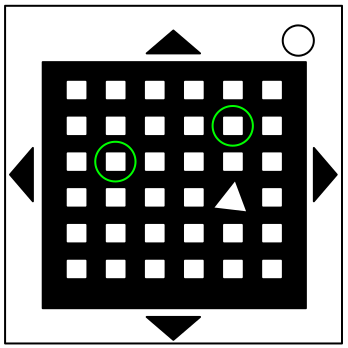
On the Subject of Mazes
This seems to be some kind of maze, probably stolen off of a restaurant placemat.
- Find the maze with matching circular markings.
- The defuser must navigate the white light to the red triangle using the arrow buttons.
- Warning: Do not cross the lines shown in the maze. These lines are invisible on the bomb.
- Naming each maze may help you memorise it. Here are some examples :
- Conversation, ???, ???, Alley, Elephant, Gully, Polar Express, The Big L, ???
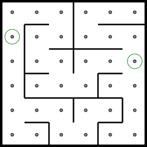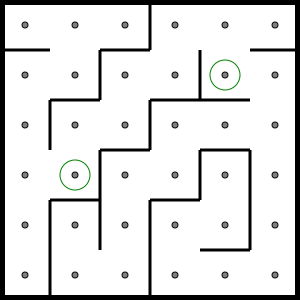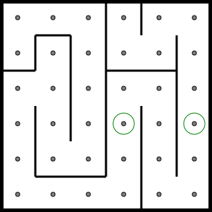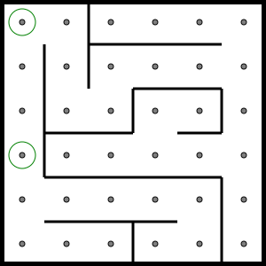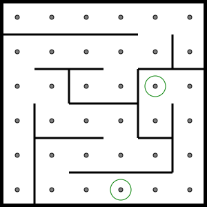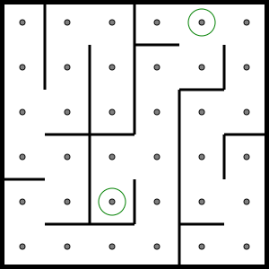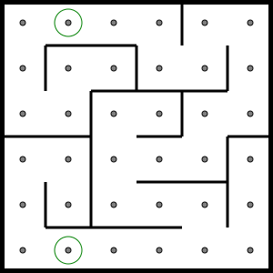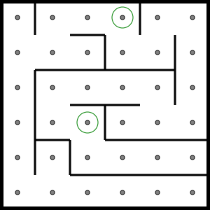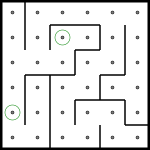
Keep Talking and Nobody Explodes Optimised v1
Passwords
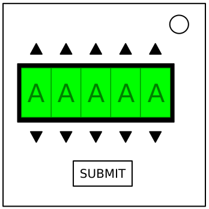
On the Subject of Passwords
Fortunately this password doesn't seem to meet standard government security requirements: 22 characters, mixed case, numbers in random order without any palindromes above length 3.
- The buttons above and below each letter will cycle through the 6 possibilities for that position.
- Only one combination of the available letters will match a password below.
- Press the submit button once the correct word has been set.
- The following letters are never used in the respective slots :
- Any : J,Q,X,Z
- 1 : D,I,J,K,M,Q,U,V,X,Y,Z
- 2 : C,D,J,K,N,Q,S,U,W,X,Y,Z
- 3 : B,C,D,F,M,N,J,K,P,Q,S,W,X,Y,Z
- 4 : B,F,J,K,M,P,Q,V,W,X,Y,Z
- 5 : B,C,F,I,J,M,O,P,Q,S,U,V,X,Z
| A | about | after | again | |||
|---|---|---|---|---|---|---|
| B | below | |||||
| C | could | |||||
| E | every | |||||
| F | first | found | ||||
| G | great | |||||
| H | house | |||||
| L | large | learn | ||||
| N | never | |||||
| O | other | |||||
| P | place | plant | point | |||
| R | right | |||||
| S | small | sound | spell | still | study | |
| TH | their | there | these | thing | think | three |
| W | water | where | which | world | would | write |
Keep Talking and Nobody Explodes Optimised v1
Section 2 : Needy Modules, V.Gas & Cap.D
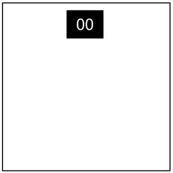
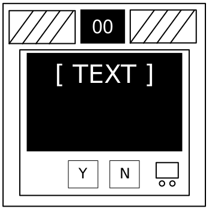
Section 2 : Needy Modules
Needy modules cannot be disarmed, but pose a recurrent hazard.
Needy modules can be identified as a module with a small 2‑digit timer in the top center. Interacting with the bomb may cause them to become activated. Once activated, these needy modules must be tended to regularly before their timer expires in order to prevent a strike.
Stay observant: needy modules may reactivate at any time.
On the Subject of Venting Gas
Computer hacking is hard work! Well, it usually is. This job could probably be performed by a simple drinking bird pressing the same key over and over again.
- Respond to the computer prompts by pressing "Y" for "Yes" or "N" for "No".
- Failure to respond correctly or within 40 seconds will cause a strike.
- Respond to "VENT GAS?" with "Y" for "Yes".
- Respond to "DETONATE?" with "N" for "No".
On the Subject of Capacitor Discharge
I'm going to guess that this is just meant to occupy your attention, because otherwise this is some shoddy electronics work.
- If left unchecked, this capacitor will cause a strike after 45 seconds.
- Discharge the capacitor before it overloads by holding down the lever to increase the timer.
Keep Talking and Nobody Explodes Optimised v1
Knobs
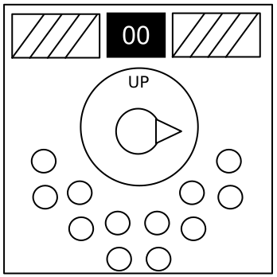
On the Subject of Knobs
Needlessly complicated and endlessly needy. Imagine if such expertise were used to make something other than diabolical puzzles.
- The knob can be turned to one of four different positions.
- The knob must be in the correct position when this module's timer (40 seconds) hits zero.
- The correct position can be determined by the on/off configuration of the twelve LEDs.
- Knob positions are relative to the "UP" label, which may have rotated.
- The rotation offsets are shown here in this order : UP, DOWN, LEFT, RIGHT
LED Configurations
Up Position (UP, DOWN, LEFT, RIGHT) :
| X | X | X | |||
| X | X | X | X | X |
| X | X | X | |||
| X | X | X | X |
Down Position (DOWN, UP, RIGHT, LEFT) :
| X | X | X | |||
| X | X | X | X | X |
| X | X | X | |||
| X | X |
Left Position (LEFT, RIGHT, DOWN, UP) :
| X | |||||
| X | X | X | X |
| X | |||||
| X | X |
Right Position (RIGHT, LEFT, UP, DOWN) :
| X | X | X | X | X | |
| X | X | X | X |
| X | X | X | |||
| X | X | X | X |
X = Lit LED
Keep Talking and Nobody Explodes Optimised v1
Appendices A & B
Appendix A : Indicator Identification Reference
Labelled indicator lights can be found on the sides of the bomb casing.
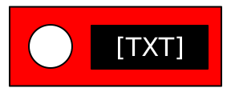| Indicators | NATO |
|---|---|
| BOB | Bob |
| CAR | Car |
| CLR | C L R |
| FRK | F R Kilo |
| FRQ | F R Quebec |
| IND | I N D |
| MSA | Mike S A |
| NSA | November S A |
| SIG | Sig |
| SND | S N D |
| TRN | T R N |
Appendix B : Battery Identification Reference
Common battery types can be found within enclosures on the sides of the bomb casing.
| Battery | Type |
|---|---|
| 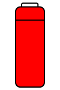 | AA |
| 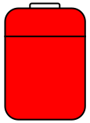 | D |
Keep Talking and Nobody Explodes Optimised v1
Appendix C
Appendix C : Port Identification Reference
Digital and analog ports can be found on sides of the bomb casing.
| Port | Name |
|---|---|
 |
DVI-D |
| Parallel | |
| PS/2 | |
| RJ-45 | |
| 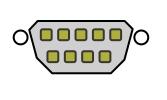 | Serial |
| 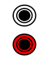 | Stereo RCA |
Keep Talking and Nobody Explodes Optimised v1 Appendix K
Appendix K : Keypad Symbol Reference
"I'm not sure what these symbols are." Well now you do.
| Symbol: | Name: | Origin: |
|---|---|---|
|
Copyright sign | Symbol used to indicate that a work is protected by exclusive rights to its use and distribution. |
|
Black star | Simply a filled-in star. Not used as a letter in any writing system. |
| White star | Simply a hollow star. Not used as a letter in any writing system. | |
|
Arabic letter Teh with ring | Letter used in the Arabic alphabet, with an old/discontinued diacritic. |
|
Cyrillic capital letter Zhe with descender | Letter derived from Zhe (Ж) used in the Dungan, Kalmyk, Tatar and Turkmen variants of the Cyrillic alphabet. |
|
Greek capital letter Omega | Letter used in the Greek alphabet, both modern and ancient. |
|
| Cyrillic capital letter iotified Big Yus | Letter used in early forms of the Cyrillic alphabet. |
|
Cyrillic capital letter Omega with Titlo | Letter used in early forms of the Cyrillic alphabet, with an old diacritic. |
| Coptic symbol Kai | Symbol used to represent “and” in the discontinued Coptic writing system. Similar in use to modern & (ampersand). | |
 |
Coptic small letter gangia | A letter from the Coptic alphabet, a discontinued writing system now only used in liturgy. |
| Cyrillic small letter Be | Letter widely used in almost all variants of the Cyrillic alphabet. |
Keep Talking and Nobody Explodes Optimised v1 Appendix K
| Symbol: | Name: | Origin: |
|---|---|---|
|
| Greek letter archaic Koppa | Letter that was used in early forms of the Greek alphabet. Now replaced by kappa (Κ). |
|
Cyrillic capital letter Little Yus | Letter that was used in early forms of the Cyrillic alphabet. Now replaced by Ya (Я). |
|
Latin small letter AE | Ligature of A and E, originating from Latin script. Used in modern languages, including French and Icelandic. |
|
Cyrillic capital letter Komi Dzje | Letter used exclusively in the Komi variant of the Cyrillic alphabet. |
|
| Cyrillic capital letter E with diaeresis | Letter used in early forms of the Cyrillic alphabet. Now replaced by E (Э). |
| Combining Cyrillic hundred thousands sign | Used in the (discontinued) Cyrillic counting system, written around another character to multiply its value by 100,000. | |
|
Cyrillic capital letter short I with tail | Letter used exclusively in the Kildin Sami language. Variant of short I (Й). |
|
Cyrillic capital letter Ksi | Letter used in early versions of the Cyrillic alphabet. There is no modern equivalent. |
| Inverted question mark | Used exclusively in the Spanish language to begin a question. | |
|
Pilcrow sign | Symbol formerly used to separate paragraphs in articles or essays. Today used by word processing software to mark paragraphs in a way that won’t be printed. |
|
Greek capital dotted lunate Sigma symbol | Symbol used in ancient Greek writing to make editorial corrections. |
Keep Talking and Nobody Explodes Optimised v1 Appendix K
| Symbol: | Name: | Origin: |
|---|---|---|
| Greek capital reversed dotted lunate Sigma symbol | Symbol used in ancient Greek writing to make editorial corrections. | |
|
Greek capital letter Psi | Letter used in the Greek alphabet, both modern and ancient. |
 |
Cyrillic capital letter Big Yus | Letter that was used in early forms of the Cyrillic alphabet. |
|
| Cyrillic capital letter Abkhasian Ha | Letter used exclusively in the Abkhazian variant of the Cyrillic alphabet. |
|
Cyrillic thousands sign | Used in the (discontinued) Cyrillic counting system to represent one thousand. |
|
Greek small letter Koppa | Letter that was used in early forms of the Greek alphabet. Now replaced by kappa (Κ). |
 |
Greek small letter Zeta | The lower-case letter Zeta (ζ) in the Greek alphabet, both modern and ancient. |
|
| Latin small letter Lambda with stroke | Letter used in Americanist phonetic notation, derived from Greek lambda (λ) and used to represent the voiceless alveolar lateral affricate (t͡ɬ). |
|
Cyrillic capital letter Yat | Letter used in early versions of the Cyrillic alphabet. In Russian now supplanted by Myagkiy Znak (Ь). |
Keep Talking and Nobody Explodes Optimised v1
Appendix N
Appendix N : NATO Phonetic Alphabet Reference
| Character | Telephony |
|---|---|
| A | Alpha |
| B | Bravo |
| C | Charlie |
| D | Delta |
| E | Echo |
| F | Foxtrot |
| G | Golf |
| H | Hotel |
| I | India |
| J | Juliet |
| K | Kilo |
| L | Lima |
| M | Mike |
| N | November |
| O | Oscar |
| P | Papa |
| Q | Quebec |
| R | Romeo |
| S | Sierra |
| T | Tango |
| U | Uniform |
| V | Victor |
| W | Whiskey |
| X | X-Ray |
| Y | Yankee |
| Z | Zulu |